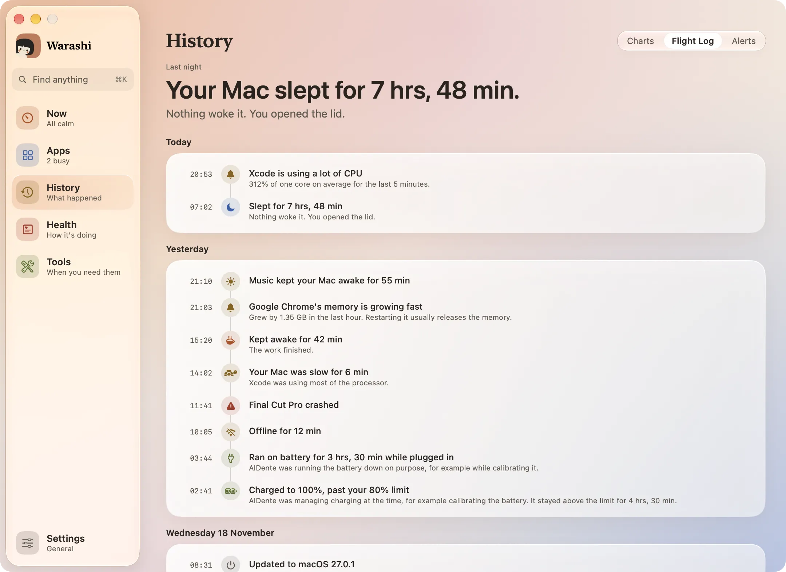
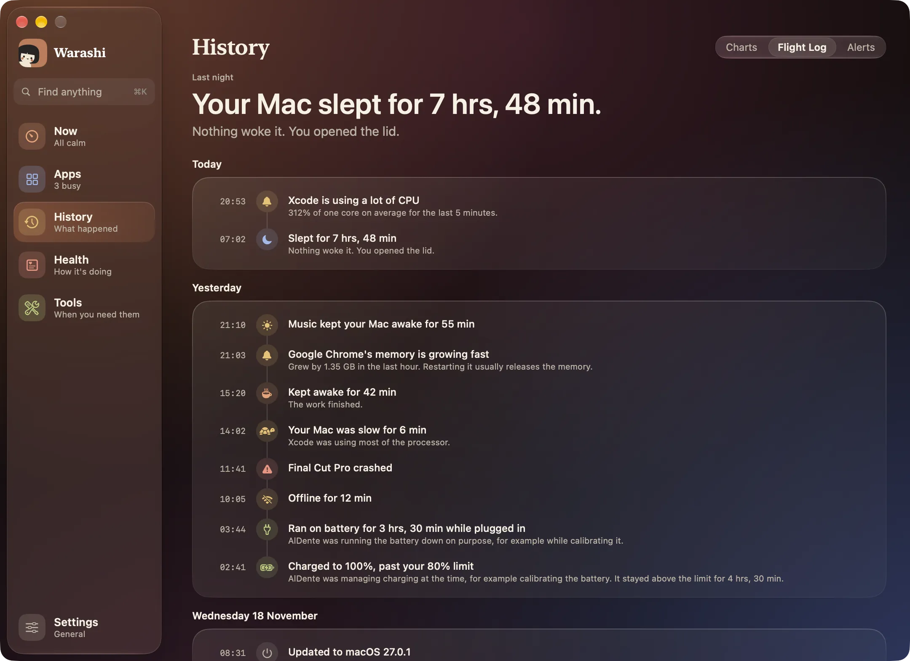

Logboek is een tab in Geschiedenis. Het schrijft de momenten op die ertoe doen, zodat je kunt zien wat je Mac heeft uitgespookt zonder een grafiek te lezen.


Afgelopen nacht
Bovenaan één regel over afgelopen nacht: hoe lang je Mac sliep, hoe vaak hij wakker werd, hoeveel batterij hij gebruikte en wat hem wekte.
Wat het vastlegt
- Slaap: hoe lang, hoe vaak wakker, hoeveel batterij en wat hem wekte.
- Opstarten en macOS-updates: “Je Mac is opgestart”, of “Bijgewerkt naar macOS …”.
- Crashes: welke app crashte en wanneer.
- Wakker blijven: je eigen Wakker houden-sessies van een minuut of langer en waarom ze eindigden, en elke app die je Mac 30 minuten of langer wakker hield.
- Offline: periodes van een minuut of langer zonder netwerk, slaap niet meegerekend.
- Vertragingen: “Je Mac was 6 min traag”, met de reden: een app die het grootste deel van de processor gebruikt, krap wordend geheugen, de Mac die zichzelf afremt om af te koelen, of eigen werk van macOS zoals Spotlight-indexering. Warashi merkt dit zelf op, uit dezelfde minuut-voor-minuutgeschiedenis als je grafieken, als de Mac 2 minuten of langer moeite had. Gebruik Waarom is mijn Mac traag? om nu te controleren.
- Laden: “Opgeladen tot 100%, voorbij je limiet van 80%” en “3 uur op de batterij gedraaid terwijl hij aan de lader hing”, met de naam van de app die op dat moment het laden beheerde, zoals AlDente die de batterij kalibreert. Zonder zo'n app was een lading voorbij de limiet waarschijnlijk macOS dat bijlaadde om zijn schattingen nauwkeurig te houden. Een volledige lading waar je zelf om hebt gevraagd, staat er niet bij.
- Waarschuwingen: elke waarschuwing die is afgegaan.
De dagen staan met de nieuwste bovenaan, Vandaag, Gisteren, daarna op datum, voor de laatste 30 dagen.
Goed om te weten: Zoals alles in Warashi blijft het logboek op je Mac.